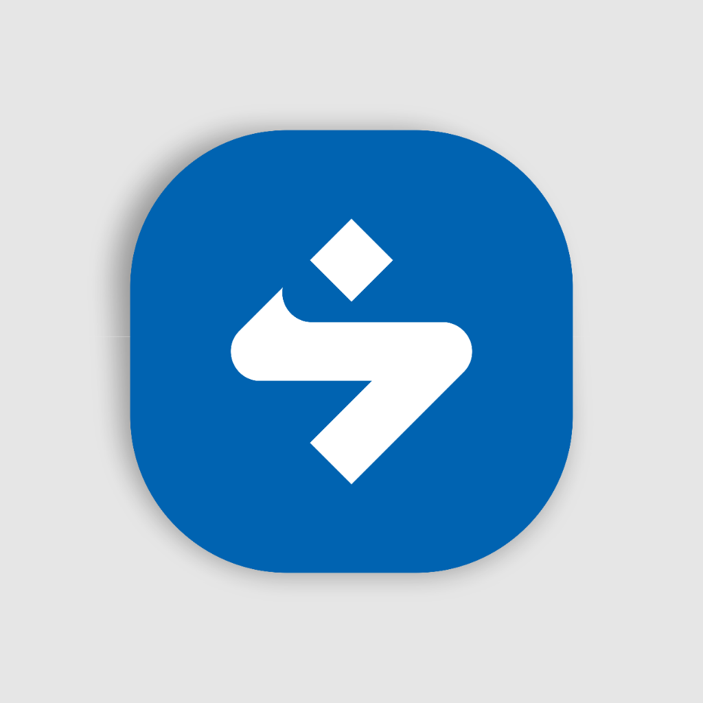

⚡ Sidebar Otomatis Aktif
Fitur broadcast pesan massal, template draf, buku kontak, dan privasi otomatis aktif di Sidebar WhatsApp Web Anda.

WhatsApp Web Automation
Fitur broadcast pesan massal, template draf, buku kontak, dan privasi otomatis aktif di Sidebar WhatsApp Web Anda.